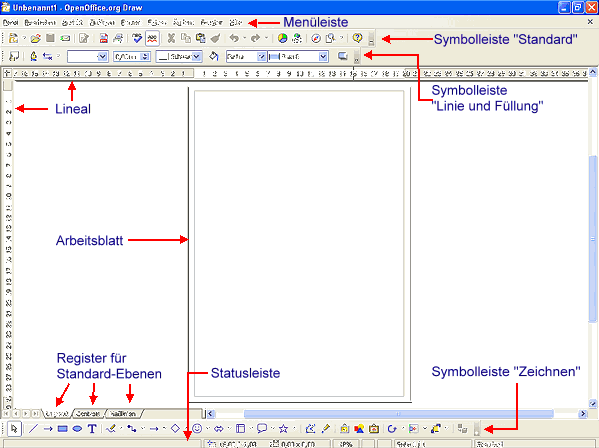

| [zurück] | [Hauptmenü] | [weiter] |
Grundlegende Bedienelemente

Wenn man OpenOffice.org Draw, das Zeichenprogramm des OpenOffice.org-Projektes, öffnet, sieht man zuerst ein leeres Zeichendokument.
Zeichnen kann man erst, wenn man ein bestimmtes Zeichenwerkzeug aktiviert.
Bei Draw finden sich zunächst einige für OpenOffice.org typischen Bedienelemente:
- Die "Menüleiste"
- Die "Standard-Symbolleiste"
- Die "Statusleiste"
Weitere Bedienelemente die Draw bereitstellt:
- Die Symbolleiste "Linie und Füllung" (Einstellungen des gewählten Zeichenwerkzeuges)
- Symbolleiste "Zeichnen" (alle Zeichenwerkzeuge) am unteren Rand
- Das "Lineal" (horizontal/vertikal)
- das Register für die "Ebenen"
Möglicherweise werden noch weitere Elemente angezeigt wie z. B. das Seitenbereich- oder das Formatvorlagen-Fenster. Die Anzeige dieser Elemente kann man in "Menüleiste>Ansicht" an- oder abschalten, sowie das Formatvorlagen-Fenster mit der Funktionstaste F11. Es kann auch vorkommen, dass die Symbolleisten an anderer Stelle erscheinen, denn man kann sie mit der Maus an Ihren linken Rändern anfassen, verschieben und nach Wunsch positionieren sowie am unteren, rechten oder linken Rand "andocken".
Den Namen der Symbolleiste erfährt man indem man auf den kleinen Pfeil an ihrem rechten Rand klickt und dort das Menü "Symbolleiste anpassen..." wählt. Der Dialog "Anpassen" öffnet sich und im Register "Symbolleisten > Symbolleiste" erscheint der Name der Symbolleiste.
Den Namen oder die Funktion eines Symbols auf der Symbolleiste erfährt man, wenn man den Mauszeiger über das Symbol bewegt und dort für 1-2 Sekunden verharrt. Sollte dabei keine sprechblasenartige Erklärung erscheinen, muss man unter "Extras > Optionen... > Openoffice.org > Allgemein" ein Häkchen bei "Tipps" für mehr Hilfetext bei "Erweiterte Tipps" setzen.